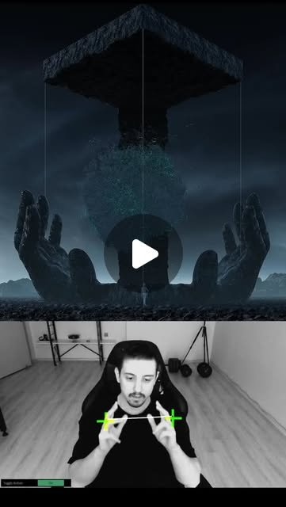
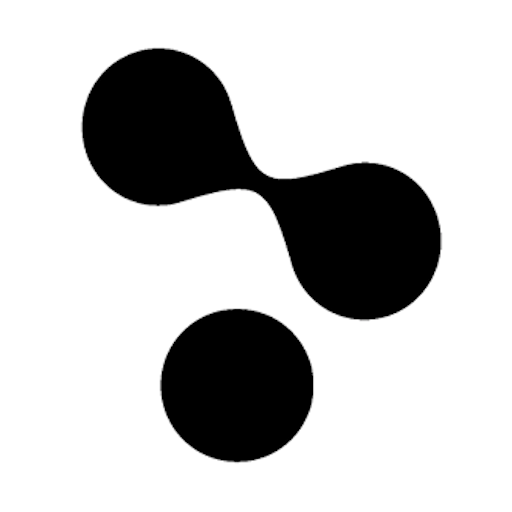
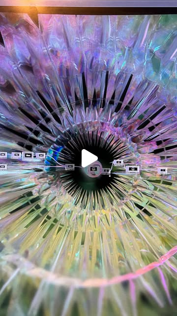
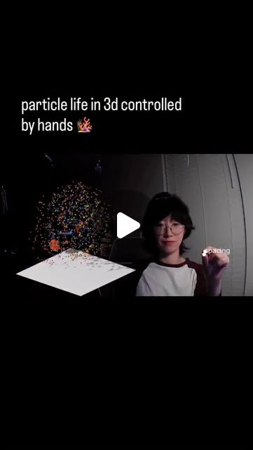

MediaPipe × TouchDesigner: Real-Time Body-to-Art Pipeline
Try It — Action Sketch
1. Install TouchDesigner + MediaPipe Python bindings 2. Set up basic hand landmark tracking (21 points per hand) 3. Pipe landmark data into TouchDesigner via OSC or shared memory 4. Build a simple particle system that responds to hand position 5. Layer in face mesh (468 landmarks) for expression-reactive visuals 6. Export as standalone for installations or stream via NDI
Connected Posts (10)






Prompt system — run this yourself
Pasteable into Claude Code, Claude, or any agent. One-shot for the whole result, step prompts when you want to steer. Every step carries its own audit; the gap audit makes the agent find and fill what it missed.
Mission. Build and ship one real-time, body-reactive visual: MediaPipe tracking (hands 21 / pose 33 / face 468 landmarks) piped into TouchDesigner, driving a generative visual that responds to movement, exported as a standalone or NDI stream. Done means it runs live at 30fps+ on a laptop with a webcam, a named gesture or body position provably changes the output, and the project file opens and runs on a second machine from the committed repo.
1 · Deeper, not bigger
- What a top professional would do (that you didn't ask for): A working interactive-installation artist does not wire a demo and stop. Like pepepepebrick's spider-web system or the DATLAB plugin work zerospacelabs shows, they design the mapping first: which landmark drives which visual parameter, with smoothing and dead-zones so jitter does not read as noise, and a fallback when tracking is lost. They profile the pipeline (camera -> MediaPipe -> transport -> TD render) for latency and dropped frames, not just 'it looks cool'. They build a gesture classifier (zerospacelabs' CHOP classifier / Teachable-Machine approach) so discrete gestures trigger states, not just continuous position. And they test it with other people's bodies and hands, in real lighting, because tracking that works on the author fails on strangers.
- Rawest material to start from: Google's MediaPipe Tasks docs and landmark index diagrams (hand 21, pose 33, face 468); the MediaPipe TouchDesigner plugin by @blankensmithing that neles0n and the touchdesigner account use; TouchDesigner's own OSC In/Out and Shared Memory CHOP docs; the DATLAB classifier/PCA TOX (datlabnyc.com/classified) zerospacelabs demos; FreeMoCap (github.com/freemocap/freemocap) for full-body 3D if you go beyond hands; and a recorded reference clip of the exact gestures you intend to support.
- Methods and tools: MediaPipe Tasks Python (HandLandmarker, PoseLandmarker, FaceLandmarker) running the webcam; transport to TouchDesigner via OSC (python-osc) or a Shared Memory CHOP for lower latency; TouchDesigner particle/instancing GPU system (POPs or instancing) driven by the incoming CHOP channels; a one-euro filter for landmark smoothing; a gesture classifier on CHOP data (the DATLAB Classifier TOX, or a small scikit-learn model); export via TouchDesigner standalone build or NDI Out for streaming.
- What proves it right: The project opens and runs on a second machine from the committed repo without manual rewiring. A latency measurement (timestamp a gesture to its on-screen response) stays under ~100ms. Frame rate holds 30fps+ under live tracking. A third person, not the author, performs the supported gesture and the output changes as specified. A recorded clip shows the mapping doing what the design doc claims.
Rewritten prompt — ask for exactly that:
Act as an interactive-installation engineer. Build me one real-time body-reactive visual and prove it, don't just demo it. Target: MediaPipe <hands|pose|face> landmarks driving a TouchDesigner generative visual, 30fps+ on a laptop webcam. First write a mapping design doc: which specific landmarks (by index) drive which visual parameters, the smoothing (one-euro filter) and dead-zones, the lost-tracking fallback, and one discrete gesture that triggers a state change. Then implement: MediaPipe Tasks Python capturing the webcam, transport to TouchDesigner over OSC or Shared Memory CHOP, and a GPU particle/instancing system reacting to the channels. Add a gesture classifier on the CHOP data for the discrete trigger. Measure end-to-end latency (gesture to pixel) and frame rate under live tracking, and record a clip. Test with a second person's hands/body in normal lighting and report where tracking fails. Package it so the .toe plus the Python runs on a second machine from the repo. Return the design doc, the code, the .toe, the latency/fps numbers, the failure notes, and a list of what you could not verify.
2 · One-shot prompt
You are an interactive-installation engineer building one real-time, body-reactive visual with MediaPipe and TouchDesigner. Stance: ship something that runs live and survives other people's bodies, not a screen-recorded demo. No marketing language. Context: MediaPipe Tasks gives you HandLandmarker (21 points/hand), PoseLandmarker (33) and FaceLandmarker (468); pick one to start. TouchDesigner receives external data cleanly over OSC (python-osc) or, for lower latency, a Shared Memory CHOP. The @blankensmithing MediaPipe TD plugin exists if you prefer it to rolling your own transport. Reference work: pepepepebrick's hand-tracked spider-web audio-visual system, the DATLAB Classifier TOX (datlabnyc.com/classified) that trains a classifier on any CHOP data, and FreeMoCap for full-body 3D later. Landmark jitter is the enemy; a one-euro filter is the standard fix. Hard constraints: 30fps+ under live tracking on a laptop webcam; end-to-end latency (gesture to pixel) must be measured, not assumed; the project must open and run on a second machine from the committed repo. Name real landmark indices, real TD operators, real file paths. Do not claim it works until it has run with a second person in the frame. Ordered deliverables: (1) a mapping design doc: which landmark indices drive which visual parameters, smoothing and dead-zones, lost-tracking fallback, and one discrete gesture that triggers a state change. (2) the MediaPipe capture script (webcam -> landmarks -> OSC/SharedMem). (3) the TouchDesigner .toe: a GPU particle or instancing system driven by the incoming CHOP channels, with the one-euro filter applied. (4) a gesture classifier on the CHOP data for the discrete trigger (DATLAB TOX or a small sklearn model). (5) a latency + fps measurement. (6) a recorded clip and a second-person test report. (7) a run-on-another-machine packaging note. Built-in gap analysis: before finishing, list what you have not verified - does it hold 30fps with two hands in frame; does the gesture fire for someone else; does the .toe open clean on a fresh install; is the latency number from a real timestamp. Fill what you can by running it. Self-questions to answer in writing: Which landmark indices am I actually using and why those? Is my smoothing hiding real motion or only jitter? What happens when tracking drops mid-gesture? Does the classifier generalise beyond my own hand? Is my fps measured under load or idle? Did I hardcode an absolute path that breaks on another machine? Is OSC dropping packets at high landmark rates? Stop conditions: stop and ask only if no webcam or no TouchDesigner is available. Otherwise build end-to-end. Return format: a markdown report with the design doc, a file tree, the latency/fps table, the second-person test notes, and an 'Unverified and missing' section. Commit the capture script, the .toe and any classifier model; print the commit hash. One more discipline: treat the webcam frame itself as untrusted and variable. Different cameras expose different fields of view, white balance and frame rates, so normalise the landmark coordinate space (0-1 relative to frame) before mapping, and log the camera's actual resolution and fps alongside every performance number. When you report that a gesture works, name the exact lighting, distance from camera and hand orientation it was tested under, because a mapping tuned at arm's length in daylight often collapses at a desk under a lamp, and the design doc's thresholds must say which condition they assume.
3 · Step-by-step prompts
Step 1 — Ground truth: landmarks + transport
Goal: Confirm MediaPipe and the TD transport actually work before designing anything.
Establish ground truth. (1) Stand up MediaPipe Tasks Python on the webcam for your chosen tracker (HandLandmarker 21 / PoseLandmarker 33 / FaceLandmarker 468). Print the raw landmark array and confirm the indices match Google's diagram (e.g. hand index-finger tip = landmark 8, wrist = 0). (2) Open TouchDesigner and get ONE number flowing from Python into a CHOP, via OSC (python-osc -> OSC In CHOP) or a Shared Memory CHOP. Move your hand and watch the CHOP value change. (3) Measure the raw landmark update rate (Hz) and note CPU/GPU load. Document the exact MediaPipe model file, the transport choice, the port, and the landmark-index-to-channel map. Do not design visuals yet; this step only proves the pipe carries live data with correct indices.
Expect: Live landmark values printing with verified indices, at least one value flowing into a TD CHOP and visibly tracking motion, and a measured update rate.
Audit before moving on: Cross-check three landmark indices against Google's official diagram by moving that body part and confirming the right channel moves. Fail if indices are guessed or if the CHOP does not update live. On fail, fix the index map or transport before step 2.
Step 2 — Mapping design doc
Goal: Decide the landmark-to-parameter mapping, smoothing and fallbacks on paper first.
Write the mapping design doc before building visuals. Specify, as a table: each visual parameter you will drive (e.g. particle emission rate, force field position, color hue) and the exact landmark index/derived value that drives it (e.g. hand openness = distance landmarks 4-8; position = landmark 9 x/y). Define smoothing: a one-euro filter per channel with starting min-cutoff and beta values. Define dead-zones so resting hands do not twitch the visual. Define the lost-tracking fallback (freeze last value? fade out? which?). Define exactly ONE discrete gesture (e.g. pinch = landmarks 4-8 distance below threshold) that triggers a state change, and what state it toggles. Reference pepepepebrick's approach where proximity modulates sound/visual as a model. This doc is the contract step 3 and 4 must satisfy.
Expect: A design doc with a parameter->landmark table, per-channel smoothing params, dead-zones, a lost-tracking fallback, and one defined discrete gesture with its threshold and effect.
Audit before moving on: Check every visual parameter has exactly one defined driver and every driver is a real landmark index or derived value from step 1. Fail if any mapping is vague ('hand controls particles') or references an index you did not verify. On fail, make it specific.
Step 3 — Build the reactive visual
Goal: Implement the TD GPU visual driven by the smoothed channels.
Implement the visual in TouchDesigner per the design doc. Build a GPU particle or instancing system (POPs or instancing geometry) whose parameters are driven by the incoming CHOP channels from step 1. Apply the one-euro filter (Filter/Lag CHOP or a custom one-euro) to each channel using the design-doc values. Implement the dead-zones and the lost-tracking fallback exactly as specified. Do not add parameters the design doc did not define. Keep the render path GPU-bound; avoid per-frame Python in the render loop. Save as a .toe with a relative, portable project folder structure (media and TOXes inside the project dir, no absolute paths).
Expect: A .toe where moving the tracked body part visibly and smoothly drives the specified visual parameters, with jitter removed and a working lost-tracking fallback.
Audit before moving on: Trigger lost tracking (cover the camera) and confirm the fallback behaves as designed, not a freeze-crash. Grep the .toe/project for absolute paths. Fail on absolute paths, on jitter that reads as noise, or on any undefined parameter. On fail, fix smoothing/paths.
Step 4 — Gesture classifier
Goal: Make the discrete gesture fire reliably via a classifier, not a brittle threshold alone.
Add the discrete-gesture trigger from the design doc as a classifier on the CHOP data, following the DATLAB Classifier approach zerospacelabs demos (train categories on CHOP channels, get a confidence score). Either use the DATLAB Classifier TOX (datlabnyc.com/classified) or train a small scikit-learn model on recorded landmark samples of the gesture vs not-gesture. Record at least 50 positive and 50 negative samples, including some from a second person's hand if available. Wire the classifier output so the gesture state change only fires above a confidence threshold with a short debounce to avoid flicker. Report the classifier's accuracy on a held-out set.
Expect: A trained classifier (TOX or sklearn model) firing the discrete gesture above a confidence threshold with debounce, plus a held-out accuracy number.
Audit before moving on: Test the gesture 10 times deliberately and 10 times with random motion; count false positives and false negatives. Fail if false-positive rate under random motion is high or if it never fires. On fail, add samples, raise the threshold, or lengthen the debounce.
Step 5 — Measure latency + fps
Goal: Quantify that it is actually real-time under live tracking.
Measure performance under real conditions. (1) Frame rate: run the full pipeline (camera + MediaPipe + transport + TD render) with the tracked body part moving, and log TD's fps over 60 seconds; also log with two hands / full body in frame if relevant. (2) Latency: timestamp a sharp gesture (e.g. a clap or pinch) at the camera and the moment the visual responds, and compute end-to-end ms; repeat 10 times and report median. (3) Note CPU/GPU utilisation. Produce a table: condition, fps, median latency, dropped frames. State the hardware (CPU/GPU, webcam resolution/fps).
Expect: A performance table with measured fps (idle and loaded), median end-to-end latency over 10 trials, dropped-frame count, and the hardware spec.
Audit before moving on: Confirm fps was measured with motion and tracking active, not idle. Confirm latency is from real timestamps, not estimated from fps. Fail if fps < 30 under load or latency > ~100ms median; on fail, drop camera resolution, switch OSC->Shared Memory CHOP, or move Python work off the render thread, then re-measure.
Step 6 — Second-person test + portability + gap report
Goal: Prove it survives another body and another machine, then report gaps.
Final validation. (1) Have a second person (or use a recorded clip of different hands/body in different lighting) perform the supported gesture and the continuous mapping; note every place tracking or the classifier fails on them. (2) Copy the project folder to a second machine (or a clean user profile) with a fresh TouchDesigner + Python env install, open the .toe, and run it; record what breaks (missing module, path, model file) and fix until it runs. (3) Record a 20-second clip showing the mapping and the gesture doing what the design doc claims. (4) Enumerate claims, mark verified/unverified/false, list missing pieces ranked by impact, fix the top two. Commit the capture script, .toe, classifier model and a requirements.txt; print the commit hash.
Expect: A second-person failure report, a successful run on a second machine (or the exact fix list), a reference clip, a claim ledger, and a committed, portable project with its hash.
Audit before moving on: Confirm the .toe opened on the second machine from the repo with no manual rewiring. Confirm the second-person test actually happened (clip or notes). Fail if it only works for the author or only on the build machine. On fail, state that limitation plainly in the report.
4 · Gap analysis and audit
Run after the pipeline is built. List every claim as a numbered item: each landmark-to-parameter mapping, the smoothing, the fallback, the gesture classifier accuracy, the fps and latency numbers, and portability. Mark each VERIFIED (with evidence: a clip, a log, a run on the second machine), UNVERIFIED, or FALSE. Specifically re-check: do the landmark indices match Google's diagram; is fps measured under motion with tracking active, not idle; is latency from real paired timestamps; does the gesture classifier fire for a second person without high false positives; does the .toe open and run on a clean install with no absolute paths; does the lost-tracking fallback avoid a freeze or crash. List missing pieces: untested lighting conditions, single-person-only classifier data, hardcoded paths, unmeasured dropped frames. Rank by impact on whether this runs as a live installation. Fix the top three and re-verify. Report what you could not fix and why (no second person available, hardware-bound fps, etc.). Do not mark real-time performance verified from fps alone without a latency measurement.
Questions the agent must ask itself before it says done:
- Which exact landmark indices drive each parameter, and did I verify them against Google's diagram?
- Is my one-euro filter removing jitter without killing real motion?
- What happens to the visual when tracking drops mid-gesture?
- Does the gesture classifier generalise to a second person's hand, or only mine?
- Is my fps number measured under live tracking and motion, or at idle?
- Is my latency number from paired timestamps, or inferred from fps?
- Did OSC drop packets at full landmark rate, and would Shared Memory CHOP fix it?
- Did I hardcode any absolute path that breaks the .toe on another machine?
- Does the project folder carry its media, TOXes and model, or does it reference files outside it?
- What lighting and skin-tone conditions have I actually tested, versus assumed?
- Is Python work running on the render thread and throttling fps?
- Does the discrete gesture false-fire under random motion?
5 · What proves it right
- The .toe opens and runs from the committed repo on a second machine (or clean profile) with a fresh TouchDesigner+Python install, no manual rewiring.
- Measured end-to-end latency (paired gesture/pixel timestamps) is under ~100ms median over 10 trials, and fps holds 30+ under live tracking with motion.
- A second person performs the supported gesture in normal lighting and the output changes as the design doc specifies, with low false positives.
- Landmark indices used match Google's official MediaPipe diagram, confirmed by moving each body part and watching the mapped channel.
- A recorded clip shows the continuous mapping and the discrete gesture doing exactly what the design doc claims.
6 · Failure modes
- Jittery output: raw landmarks drive parameters with no filter. Tell: the visual twitches when hands rest. Fix: one-euro filter plus dead-zones per channel.
- Works only for the author: classifier trained on one hand. Tell: a second person's gesture never fires. Fix: add second-person samples, raise threshold, debounce.
- Fake real-time: fps looked fine but latency is high. Tell: visible lag between gesture and response. Fix: measure latency with paired timestamps; switch to Shared Memory CHOP; move Python off the render thread.
- Broken on another machine: absolute paths or external media. Tell: .toe opens with missing-file errors. Fix: portable project folder, relative paths, requirements.txt.
- OSC packet loss at high landmark rates: 468 face landmarks flood OSC. Tell: channels stutter or freeze. Fix: send only needed landmarks, or use Shared Memory CHOP.
- Lost-tracking crash: no fallback when the hand leaves frame. Tell: visual freezes or NaNs. Fix: implement the designed fallback (hold last / fade).
- Python in the render loop: per-frame inference stalls TD. Tell: fps drops when tracking runs. Fix: decouple capture into its own process/thread, transport only results.
7 · Agent direction (unattended runs)
Reach first for the webcam + MediaPipe Tasks Python and a minimal OSC/Shared-Memory bridge to TouchDesigner; prove live data flows with correct landmark indices before building any visual. Cache the step-1 index-to-channel map and the step-2 design doc; every later step must satisfy the doc. Run the pipeline for real to get fps and latency; never report real-time from reasoning. Spawn a sub-agent only to train the gesture classifier so sampling and evaluation stay isolated. Stop and ask the user only if there is no webcam or no TouchDesigner install. Keep the project folder self-contained and relative-pathed; that is what makes the second-machine oracle pass. Return a markdown report (design doc, file tree, performance table, second-person notes, 'Unverified and missing') plus committed files: the capture script, the .toe, the classifier model and requirements.txt. Include a short reference clip path. If it only runs for the author or only on the build machine, report that as the result rather than hiding it.
Prompt system updated 2026-10-22 · all prompt systems · JSON